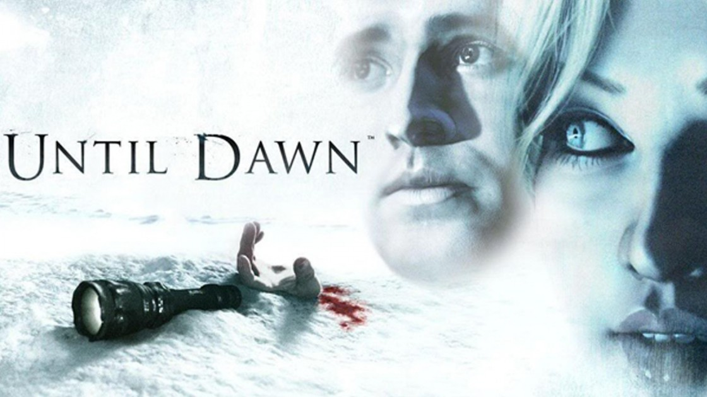
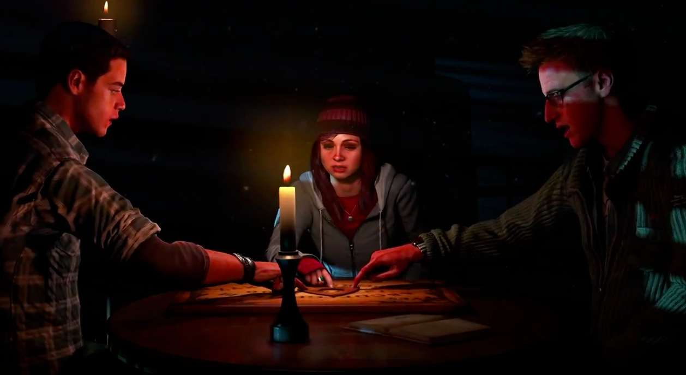
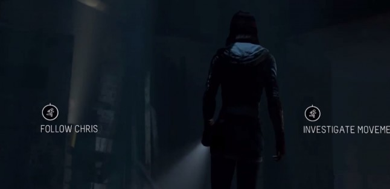
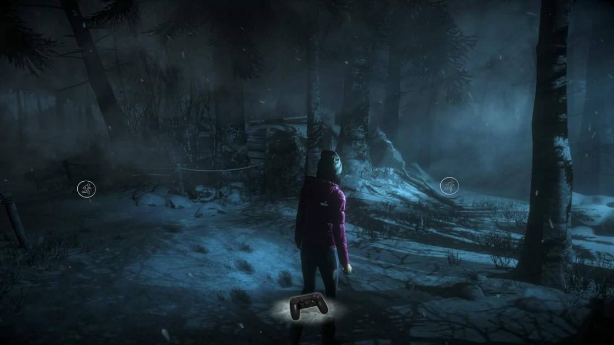

Jocul are toate ingredientele pentru rețeta perfectă a unei parodii la adresa tuturor filmelor cu adolescenți inconștienți, disperați după sex, cu un repertoriu plin de glume proaste și nu prea isteți din fire. Cei de la Supermassive Games, cred că și-au pus în cap să adune toate clișeele din filme precum Final Destination, Scary Movie, Cabin in the Woods, I Know What You Did Last Summer, Friday the 13th sau alte lungi metraje de acest gen. Din momentul în care am intrat în Until Dawn, am avut senzația că mă uit la un film din anii ’80, în care lucrurile vor lua o întorsătură nefastă, iar acei tineri prost-crescuți vor plăti cu vârf și îndesat pentru fiecare glumă neadecvată și remarcă cu tentă sexuală pe care le-au scos vreodată pe gură.

POVESTEA
Voi încerca, pe cât posibil, să nu vă fac spoiler, dar avem nevoie de câteva detalii despre povestea din Until Dawn pentru a pune lucrurile într-o perspectivă propice continuării acestui review. Dacă doriți să nu știți nimic despre story, atunci vă invit să treceți direct la secțiunea gameplay , dar exact așa cum am procedat și cu recenziile precedente, voi menționa numai aspecte care au fost deja dezvăluite prin presa de specialitate și în trailer-ele disponibile pentru acest joc.

După un scurt capitol introductiv, care se termină cu un eveniment tragic, acțiunea din Until Dawn face un salt de un an și ne vedem martorii unei reuniuni a unui grup format din opt prieteni, tineri toți și, așa cum vă spuneam, nu tocmai deștepți. Cei opt, pe numele lor, Sam, Mike, Josh, Ashley, Chris, Matt, Emily și Jessica se reunesc, pentru a comemora trecerea unui an de la tragicul eveniment menționat mai sus. Întâlnirea prietenilor inconștienți are loc la o cabană izolată, înconjurată de pădure, situată pe vârful unui munte, locație accesibilă numai prin utilizarea unei telecabine vechi, care stă parcă să cadă la prima rafală de vânt. Mai mult decât atât, grupul ajunge în prag de seară, tocmai bine pentru a petrece o noapte de neuitat… Condițiile meteorologice sunt excelente, în aer se văd fulgi de zăpadă, iar la orizont se pot observa nori amenințători de furtună. Acum, pe bune, cât de prost poți să fii să te întorci într-un loc în care s-a întâmplat ceva rău, exact la aniversarea acelui eveniment și exact în compania celor prezenți atunci?

GAMEPLAY
Din punct de vedere al mecanicilor de joc folosite în Until Dawn, acestea le vor fi extrem de familiare celor care au încercat jocuri precum Heavy Rain, Beyond: Two Souls sau chiar seriile episodice create de Telltale Games în ultimii ani. Pe parcursul celor 10 capitole, vom interacționa cu toate cele opt personaje și cu fiecare dintre acestea va trebui să navigăm diferite locații din interiorul și din împrejurimile cabanei, acțiunile pe care le putem întreprinde ne vor solicita apăsarea unui buton pentru a deschide o ușă sau pentru a intra în vorbă cu cineva, iar momentele tensionate sunt extrem scriptate și se folosesc la maxim de quicktime events. Nu în ultimul rând, uneori va fi nevoie să deslușim mici puzzle-uri pentru a putea progresa cu povestea.
Supermassive Games au utilizat o versiune modificată a motorului grafic folosit de Guerrilla Games pentru Killzone: Shadow Fall și acest lucru se vede la fiecare pas. Until Dawn arată excelent, personajele par vii, peisajele sunt superbe, chiar dacă sunt întunecate, iar micile efecte speciale, cum ar fi fulgii de nea, care plutesc spre cameră arată foarte, foarte frumos. Umbrele și iluminarea sunt de foarte mare importanță atunci când vine vorba despre atmosfera jocului și raportez cu plăcere că și acestea sunt extrem de reușite. Until Dawn se poate număra printre cele mai arătoase titluri apărute până acum pe platforma celor de la Sony. Îl pun cu încredere alături de The Order: 1886 pentru fidelitatea superioară a caracterelor, deoarece pe cât de nesuferiți mi-au fost cei opt, pe atât de bine arată.
Until Dawn este un joc bun, uneori te amuză, alteori reușește să te sperie, dar per total oferă o experiență de gameplay foarte reușită. Nu încearcă să fie un Survival Horror ci, așa cum spuneam în introducere, doar o parodie excelentă la adresa acelor filme mediocre, care erau la modă în anii ’80.